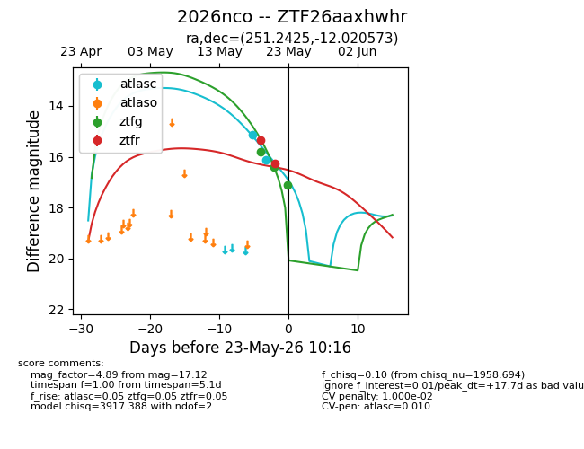
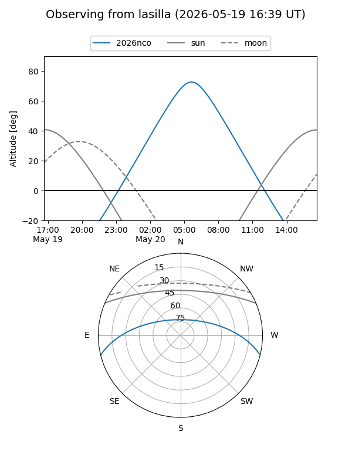
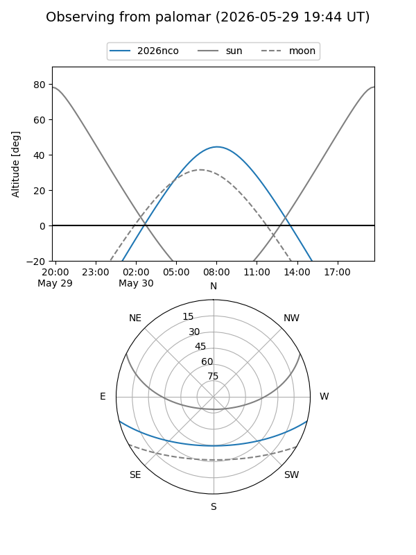
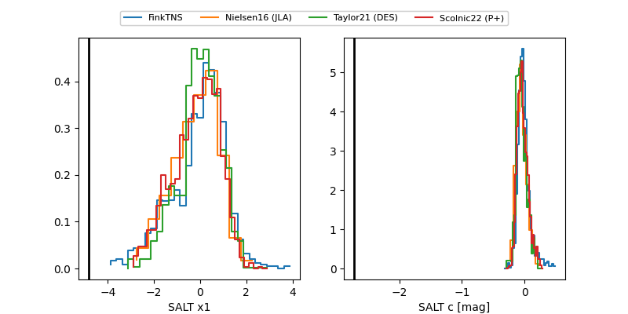

2026nco
Target 2026nco at 2026-05-23 10:17
Aliases and brokers:
lsst-FINK: link
lsst-Lasair: link
lsst-ALeRCE: link
ztf-FINK: link
ztf-Lasair: link
ztf-ALeRCE: link
TNS: link
YSE: link
alt names
ZTF26aaxhwhr (ztf,fink_ztf)
2026nco (tns,yse)
Coordinates:
equatorial (ra, dec) = 251.2425,-12.02057
equatorial (HMS+DMS) = 16:44:58.20,-12:01:14.06
galactic (l, b) = (6.2182,+21.18440)
Flags:
likely cv: !
Photometry:
last atlasc=16.12, ztfg=17.12, ztfr=16.25
2 atlasc, 3 ztfg, 2 ztfr detections
Lightcurve

Visibility


Additional plots
